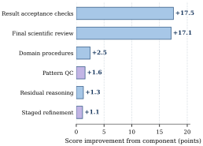

Diagnostic tasks
Refinement decisions, residual interpretation, parameter recovery, phase analysis, and refinement-history assessment.
- 30 easy · 40 medium · 30 hard
- Maximum 20 tool calls
- Exact, objective, and scientific evaluation
Verifiable, stepwise powder X-ray diffraction analysis with executable crystallographic backends and scientific checks.
Powder X-ray diffraction is central to materials characterization, yet reliable end-to-end automation remains challenging. AutoXRD organizes powder-XRD analysis into stepwise refinement procedures, grounds actions in observed evidence, and applies deterministic crystallographic and physical checks before accepting a result.
XRDBench evaluates the resulting agents through 100 diagnostic questions and 34 executable workflows across eleven XRD task families. Across ten models, performance decreases from 61.9 on diagnostic QA to 53.7 on E2E workflows, exposing persistent limitations in quantitative reasoning, indexing, Rietveld refinement, and controlled termination.
Planning, refinement backends, physical validation, and auditable trajectories in one agent framework.

Two complementary tracks test isolated scientific decisions and their composition into executable XRD workflows.
Refinement decisions, residual interpretation, parameter recovery, phase analysis, and refinement-history assessment.
State-changing analyses across eleven XRD task families with artifacts, execution gates, and physical validation.

1,340 model–task runs reveal a clear gap between bounded scientific reasoning and autonomous workflow execution.
out of 100 across the two tracks
bounded diagnostic reasoning
executable XRD workflows
GPT-5.6 Sol


All six evaluated components improve GPT-5.6 Luna on their targeted XRDBench-QA settings, with the largest gains from result-acceptance checks and final scientific review.

Agents may execute a workflow successfully yet return inaccurate cells, HKL assignments, or structurally invalid refinements.
Missing code, invalid backend outputs, or incomplete artifacts prevent scoring and scientific verification.
Some trajectories consume nearly the full 50-step budget without producing a valid deliverable.
BibTeX will be added when the public paper record is available.